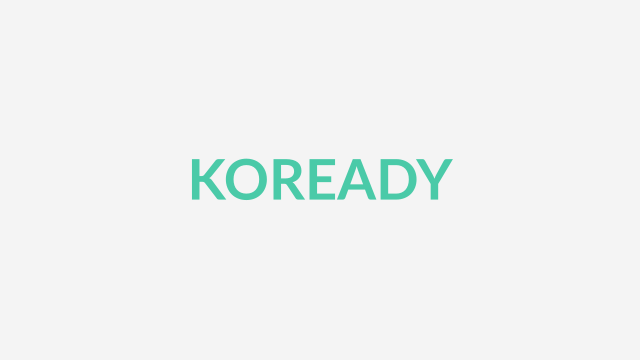
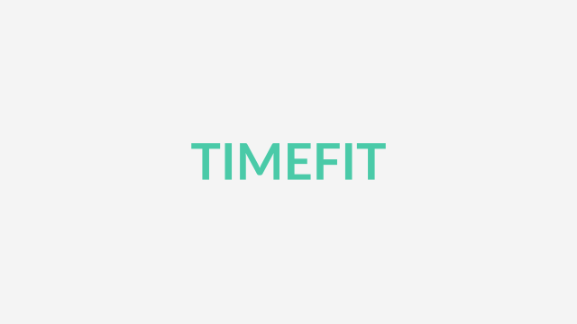
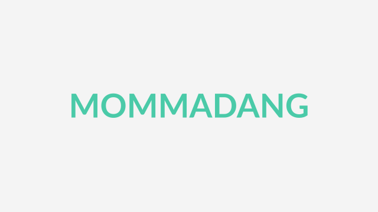
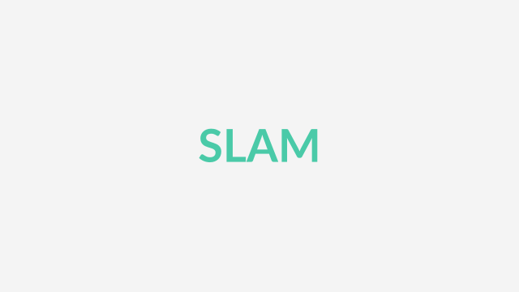
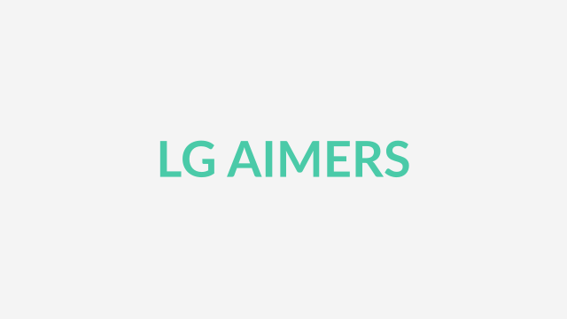

방한 외국인 전용 여행 계획 서비스 Koready
GDGoC Dev Sprint 2026 프로젝트입니다. (팀장)
공공데이터 기반 관광지·이동 데이터로 동선을 설계하고, 국적별 실제 카드소비 통계로 경비를 예측합니다.
실생활 속 문제를 찾아
서비스로 풀어내는 웹·앱 개발자
실생활 속 문제를 찾아 서비스로 풀어내는 것을 좋아합니다.
웹과 앱을 넘나들며 사용자가 만족할 만한 서비스를 제공합니다.
한국공학대학교 컴퓨터공학부
관심사: Programming, Baseball, Investing, Photography
2025 ~ 2026
GDGoC TUKorea 멤버로 활동하고 있습니다. 2026 Dev Sprint에서 방한 외국인 전용 여행 계획 서비스 Koready 프로젝트의 팀장을 맡고 있습니다.
2026.05.30
논문 발표. 'MobileNetV2-SuperPoint Visual SLAM 파이프라인 구현' 논문은 제1저자로 작성했습니다.
모바일 프로그래밍 · 웹 서비스 프로그래밍
모바일 프로그래밍 과목에서 'Mommadang' 프로젝트의 Frontend를, 웹 서비스 프로그래밍 과목에서 'TimeFit' 프로젝트의 팀장을 맡았습니다.
2026.08 ~ 2026.09
온라인 해커톤에서 1090팀(명) 중 23위로 본선에 진출했고, 오프라인 해커톤을 34팀 중 24위로 수료했습니다.
사용하는 언어
프레임워크 및 라이브러리
데이터베이스 및 클라우드
개발 도구
최근 공부하는 것

GDGoC Dev Sprint 2026 프로젝트입니다. (팀장)
공공데이터 기반 관광지·이동 데이터로 동선을 설계하고, 국적별 실제 카드소비 통계로 경비를 예측합니다.

시흥시 CE 공모전 프로젝트입니다. (팀장)
시흥시 일자리 매칭 시스템입니다.

시흥시 CE 공모전 프로젝트입니다. (Frontend)
Kotlin으로 개발한 모바일 앱입니다.

The-VSLab 프로젝트입니다.
GPS 신호가 제한되거나 인간의 접근이 불가능한 극한 환경에서도 안정적으로 작동하는 SLAM 시스템을 개발합니다.

LG Aimers 9기 해커톤 프로젝트입니다. (23위 / 1090위)
투구 직전 정보만으로 제구 성공 확률을 예측합니다.
github.com/develop-kwon 공개 저장소 기준 (포크 제외, 최근 푸시 순)
| 저장소 | 설명 | 주요 언어 | 최근 푸시 |
|---|---|---|---|
| LG-Aimers-9th | LG Aimers 9기 | Python | 2026.09.09 |
| STT-Highlight-Report | STT 반복표현 하이라이트 리포트 | HTML | 2026.07.15 |
| Crawling | 개인 크롤링 공부 프로젝트 | Python | 2026.07.04 |
| ParkToken | QR 코드 기반 이중주차 차량 이동 요청 서비스 (MVP: 아파트 단지 모드) | TypeScript | 2026.06.25 |
| AI-Secretary | AI 브리핑 오케스트레이터 | TypeScript | 2026.06.19 |
| Perceptron | 개인 딥러닝 공부 프로젝트 | Jupyter Notebook | 2026.04.21 |
| TimeFit | 긴급 구인 서비스 | JavaScript | 2026.01.31 |
| Raw-Socket-Programming | 패킷 분석 프로그램 구현 | C | 2025.12.01 |
| emotion-diary | 개인 React.js 프로젝트 | JavaScript | 2025.08.30 |
| netflix-clone-coding | Netflix UI with Flutter | Dart | 2025.07.25 |
| flutter-todo | Todo UI | Flutter | 2025.06.28 |
| mommadang | 시흥 엄마들을 위한 앱 | Kotlin | 2025.06.28 |
| network-project | TCP 통신을 통한 게임 | C | 2025.06.28 |
| 조직 | 저장소 | 설명 | 주요 언어 | 최근 푸시 |
|---|---|---|---|---|
| The-VSLab | superpoint-slam | GPS 신호가 제한되거나 인간의 접근이 불가능한 극한 환경에서도 안정적으로 작동하는 SLAM 시스템 개발 | Python | 2026.08.13 |
| WEB-Time-FIT | Frontend | 시흥시 일자리 매칭 시스템 프론트엔드 | JavaScript | 2025.12.22 |
| WEB-Time-FIT | Backend | 시흥시 일자리 매칭 시스템 백엔드 | Java | 2025.12.21 |
| GDGoC-TUK-Dev-Sprint | frontend | Koready 모바일 클라이언트 (React Native 0.87, TypeScript, NativeWind v4) | Kotlin | 2026.09.24 |
| GDGoC-TUK-Dev-Sprint | backend | Koready 백엔드 API 서버 (Java 21, Spring Boot, PostgreSQL, Redis) | Java | 2026.09.24 |